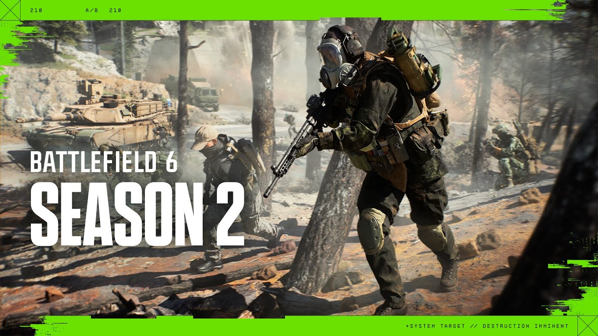

Battlefield 2026 Roadmap
Publicado por Electronic Arts · 2026
Electronic Arts ha presentado la hoja de ruta de Battlefield para 2026, mostrando una serie de actualizaciones importantes pensadas para ampliar la experiencia del juego durante el año.
El roadmap confirma que Battlefield 6 recibirá nuevos mapas, mejoras de jugabilidad, contenido competitivo y el regreso de elementos clásicos de la saga. La compañía destaca que la guerra total seguirá evolucionando con escenarios de mayor escala y nuevas formas de jugar.
Uno de los puntos más importantes del plan es la llegada de mapas más grandes. La comunidad había pedido escenarios con mayor libertad, más espacio para vehículos y combates más abiertos. Por eso, varias de las actualizaciones de 2026 están centradas en ampliar la escala de las batallas.
Entre los contenidos destacados aparecen mapas inspirados en entregas anteriores de Battlefield. Según la información publicada, se espera el regreso de zonas muy recordadas por los jugadores, incluyendo versiones renovadas de mapas clásicos como Railway to Golmud y Grand Bazaar.
Otro de los grandes anuncios es el regreso de la guerra naval. Esta característica es muy importante para la identidad de Battlefield, ya que permite combates combinados entre infantería, vehículos terrestres, aviones y unidades marítimas. La Temporada 4 estará especialmente centrada en este tipo de enfrentamientos.
El mapa Tsuru Reef será una de las piezas principales de esta etapa. Se describe como un escenario de gran tamaño con espacios marítimos y aéreos, portaaviones funcionales y un sistema dinámico de olas que busca hacer más intensos los combates navales.
También se menciona el regreso de Wake Island, uno de los mapas más reconocidos de la franquicia Battlefield. Su vuelta puede ser una forma de conectar con los jugadores veteranos y recuperar parte de la sensación clásica de la saga.
Además de los mapas, Battlefield también recibirá juego clasificatorio. Ranked Play permitirá a los jugadores competir en un entorno más serio, con progresión, emparejamientos y una estructura más enfocada en la competición.
En conjunto, el roadmap de Battlefield 2026 parece una respuesta directa a las peticiones de la comunidad. Más mapas, más escala, guerra naval, funciones competitivas y contenido clásico son los pilares principales de esta nueva etapa.
Ver fuente oficial